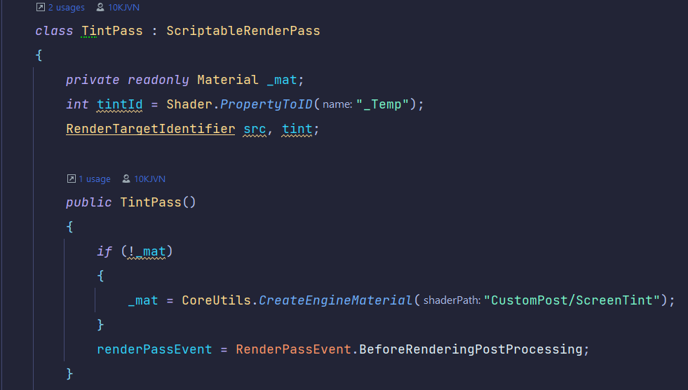
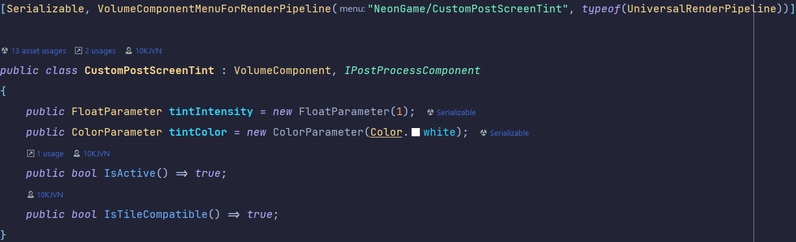
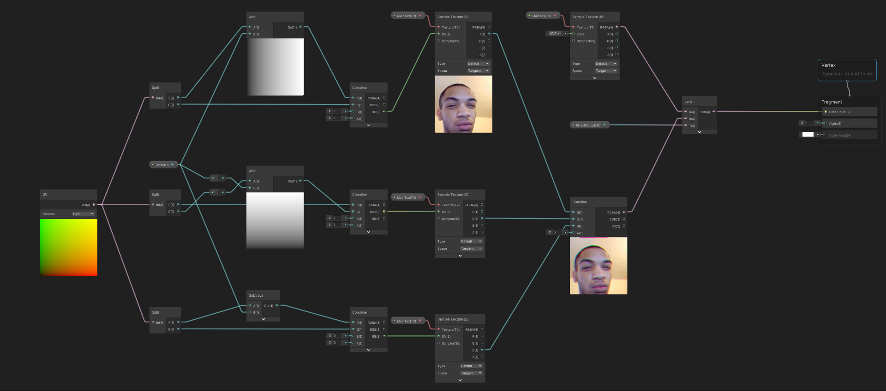
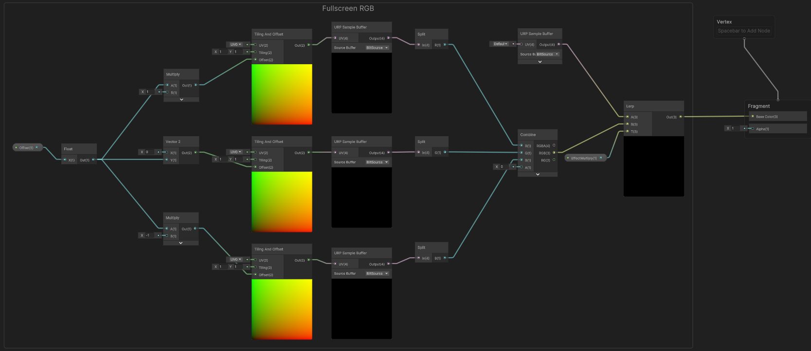

Universal Render Pipeline
Project Status: Work in progress
Project Type: Solo
Software Used: Unity
Languages Used: C#, HLSL
About my URP project
In this project i was given 8 weeks to pick any software of choice and specialize in it. Since i've already worked with shaders 1 period before this, i thought to myself "Yeah that was cool, i'd love to know more about that."
My Features
- Fullscreen Chromatic Aberration
Intro
So in the first week of this period there was a list of existing userstories for Operation Starfall.
And of one these userstories said something along the lines of 'I want the game to feel like watching an 80's NTSC TV.'
Which of course sounded pretty cool to me, so i picked that userstory.
At first we were tasked to create a little presentation about the subject you've picked. And here is the one i created with a retro-like aesthetic My Presentation
Me experimenting with volumes overrides:
.png)
Lens Distortion & my first iterration of chromatic abberation shader.
Development
I was asked to look for possibilities to create custom overrides for unity's volumes.
So i went on ahead and found out it's pretty simple and created 3 scripts.
A CustomRenderPassFeature, TintRendererFeature & CustomPostScreenTint.
Each of these serve a purpose to make the effect render (show up).
Code Snippets
Identifying the target this shader needs to render to.
My Custom Volume Override:
This script allows you to set a custom color & intensity.
RGB offset on a texture:

Here i've been playing around with Shadergraph to create an chromatic aberration like effect.
The navmesh was tough to figure out, and in the end i didn't completely get it working with the enemies not moving from their position. Atleast i managed to figure out how the following Attack Function
Fullscreen Aberration

This feature is directly added to the renderer. It splits every rendereds object RGB values apart with an customizable offset.
Conclusion
At the end of the 8 week period i've learned alot more about render pipelines, shaders and how they can work together. Which i at first did not have the slightest knowledge about. I was stuck on getting my screen tint to be rendered for 2 weeks straight. Turns out the issue was i forgot to add my renderer feature, to the renderer. Since there was nothing disfunctional about the shaders i've created.
The Shaders
Here's the first version of the shader with a test texture.
This is the second version of the shader.
Continuation
Outside of the 8 weeks i worked on the RGB offset shader, I've been experimenting of my own with rendering etc. But more of that is to be uploaded as soon as i got something more polished to show.